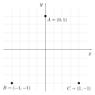

3.5 Triângulo de Sierpinski
Nesta atividade usaremos pela primeira vez comandos de desenho do OpenGL. Usaremos esses comandos para desenhar um triângulo de Sierpinski composto de pontos no plano.
O triângulo de Sierpinski é um fractal que pode ser gerado por um tipo de sistema dinâmico chamado de sistema de função iterada (iterated function system, ou IFS). Esse processo pode ser implementado através de um algoritmo conhecido como jogo do caos.
Para “jogar” o jogo do caos, começamos definindo três pontos \(A\), \(B\) e \(C\) não colineares. Por exemplo, \(A=(0, 1)\), \(B=(-1, -1)\) e \(C=(1, -1)\):

Além dos pontos \(A\), \(B\) e \(C\), definimos mais um ponto \(P\) em uma posição aleatória do plano. Com \(A\), \(B\), \(C\) e \(P\) definidos, o jogo do caos consiste nos seguintes passos:
- Mova \(P\) para o ponto médio entre \(P\) e um dos pontos \(A\), \(B\), \(C\) escolhido de forma aleatória;
- Volte ao passo 1.
Para gerar o triângulo de Sierpinski, basta desenhar \(P\) a cada iteração. O jogo não tem fim, mas quanto maior o número de iterações, mais pontos serão desenhados e mais detalhes terá o fractal (figura 3.42).
Figura 3.42: Triângulo de Sierpinski desenhado com 1.000, 10.000 e 100.000 iterações em uma área de 210x210 pixels.
Implementaremos o jogo do caos usando a mesma estrutura dos projetos firstapp (seção 2.3) e tictactoe (seção 2.4). O procedimento será simples: para cada chamada de onPaint, faremos uma iteração do jogo e desenharemos um ponto na posição \(P\) usando um comando de renderização do OpenGL. Os pontos desenhados serão acumulados no framebuffer e o resultado será a visualização da construção do fractal.
Configuração inicial
Crie o subdiretório abcg/examples/sierpinski e modifique o arquivo abcg/examples/CMakeLists.txt para incluir essa nova pasta. Comente as linhas de add_subdirectory dos projetos anteriores para que eles não sejam compilados:
# add_subdirectory(helloworld)
# add_subdirectory(firstapp)
# add_subdirectory(tictactoe)
add_subdirectory(sierpinski)Crie o arquivo abcg/examples/sierpinski/CMakeLists.txt com o seguinte conteúdo, similar ao que utilizamos nos projetos anteriores:
project(sierpinski)
add_executable(${PROJECT_NAME} main.cpp window.cpp)
enable_abcg(${PROJECT_NAME})Crie também os arquivos main.cpp, window.cpp e window.hpp em abcg/examples/sierpinski. Vamos editá-los a seguir.
main.cpp
O conteúdo de main.cpp ficará como a seguir:
#include "window.hpp"
int main(int argc, char **argv) {
try {
abcg::Application app(argc, argv);
Window window;
window.setOpenGLSettings({.samples = 2, .doubleBuffering = false});
window.setWindowSettings({.width = 600,
.height = 600,
.showFullscreenButton = false,
.title = "Sierpinski Triangle"});
app.run(window);
} catch (std::exception const &exception) {
fmt::print(stderr, "{}\n", exception.what());
return -1;
}
return 0;
}Esse código é parecido com o main.cpp dos projetos firstapp e tictactoe. As únicas diferenças estão nas funções chamadas nas linhas 8 e 9:
window.setOpenGLSettings({.samples = 2, .doubleBuffering = false});
window.setWindowSettings({.width = 600,
.height = 600,
.showFullscreenButton = false,
.title = "Sierpinski Triangle"});setOpenGLSettingsé uma função membro deabcg::OpenGLWindow, classe base de nossa classe customizadaWindow.setOpenGLSettingsrecebe uma estruturaabcg::OpenGLSettingscom as configurações de inicialização do OpenGL. Essas configurações são usadas pela SDL no momento da criação de um “contexto do OpenGL” que representa o framebuffer vinculado à janela e todo o estado interno do OpenGL:- O atributo
samples = 2faz com que o framebuffer suporte suavização de serrilhado (antialiasing) das primitivas do OpenGL; - O atributo
.doubleBuffering = falseé uma configuração de criação do contexto do OpenGL que faz com que a técnica de double buffering seja desativada. Desse modo, conseguiremos desenhar os pontos incrementalmente no framebuffer para formar o desenho do fractal. Se não desativarmos o double buffering, o OpenGL poderá apagar o conteúdo do backbuffer para cada novo quadro de exibição (isso acontece com a versão para web), e então só visualizaremos o último ponto desenhado.
- O atributo
No estrutura
abcg::WindowSettingspassada como argumento desetWindowSettings, usamosshowFullscreenButton = falsepara desativar a exibição do botão de tela cheia. Afinal, não queremos que o botão obstrua o desenho do fractal. Mesmo sem o botão, o modo janela pode ser alternado com o modo de tela cheia através da teclaF11.
window.hpp
Na definição da classe Window, substituiremos novas funções virtuais de abcg::OpenGLWindow e definiremos novas variáveis que serão utilizadas para atualizar o jogo do caos e desenhar o ponto na tela:
#ifndef WINDOW_HPP_
#define WINDOW_HPP_
#include <random>
#include "abcgOpenGL.hpp"
class Window : public abcg::OpenGLWindow {
protected:
void onCreate() override;
void onPaint() override;
void onPaintUI() override;
void onResize(glm::ivec2 const &size) override;
void onDestroy() override;
private:
glm::ivec2 m_viewportSize{};
GLuint m_VAO{};
GLuint m_VBOVertices{};
GLuint m_program{};
std::default_random_engine m_randomEngine;
std::array<glm::vec2, 3> const m_points{{{0, 1}, {-1, -1}, {1, -1}}};
glm::vec2 m_P{};
void setupModel();
};
#endifObserve que, além de usarmos as funções onCreate, onPaint e onPaintUI, estamos agora substituindo mais duas funções virtuais de abcg::OpenGLWindow:
onResizeé chamada pela ABCg sempre que o tamanho da janela é alterado. O novo tamanho é recebido pelo parâmetrosize, que é um vetor 2D de inteirosglm::ivec2disponibilizado pela biblioteca OpenGL Mathematics (GLM)15.Na nossa aplicação, quando a ABCg chamar
onResize, faremos uma cópia desizeemm_viewportSize(linha 17). Isso será feito para que, emonPaint, possamos configurar o tamanho da área de desenho (viewport) do OpenGL para ser o mesmo tamanho da janela da aplicação. O conceito de viewport será aprofundado mais adiante.onDestroyé chamada pela ABCg quando a janela é destruída, isto é, no fim da aplicação. Essa é a função complementar deonCreate, usada para liberar os recursos do OpenGL que foram alocados emonCreateou durante a aplicação.
Da linha 17 a 25 temos a definição das variáveis da classe:
glm::ivec2 m_viewportSize{};
GLuint m_VAO{};
GLuint m_VBOVertices{};
GLuint m_program{};
std::default_random_engine m_randomEngine;
std::array<glm::vec2, 3> const m_points{{{0, 1}, {-1, -1}, {1, -1}}};
glm::vec2 m_P{};m_VAO,m_VBOVerticesem_programsão identificadores de recursos alocados pelo OpenGL, geralmente armazenados na memória da placa de vídeo. Esses recursos correspondem aos shaders que definem o comportamento da renderização, e ao arranjo ordenado de vértices utilizado para montar as primitivas geométricas no pipeline de renderização. No nosso caso, o arranjo de vértices contém apenas um vértice e equivale ao ponto \(P\) que queremos desenhar.m_viewportSize, como já vimos, serve para armazenar o tamanho da janela da aplicação que é recebido emonResize.m_randomEngineé um objeto do gerador de números pseudoaleatórios da biblioteca padrão do C++ (note o uso do#include <random>na linha 4). Esse objeto é utilizado para sortear a posição inicial de \(P\) e qual ponto (\(A\), \(B\) ou \(C\)) será escolhido em cada iteração do jogo do caos.m_pointsé um arranjo que contém a posição dos pontos \(A\), \(B\) e \(C\). As coordenadas dos pontos são descritas por uma estruturaglm::vec2que representa um vetor 2D com coordenadas do tipofloat.m_Pé a posição do ponto \(P\).
Além da definição das variáveis, na linha 27 é declarada a função Window::setupModel que cria os recursos identificados por m_VAO e m_VBOVertices. A função é chamada sempre que um novo ponto \(P\) precisa ser desenhado.
window.cpp
Primeiro vamos implementar a lógica do jogo sem desenhar na tela. Em seguida, incluiremos o código que usa o OpenGL para desenhar os pontos.
Começaremos com a definição de Window::onCreate(). Como essa função é chamada apenas uma vez na inicialização da aplicação, colocaremos aqui o código que inicia o gerador de números pseudoaleatórios e sorteia as coordenadas iniciais de \(P\) (que no código é m_P):
#include "window.hpp"
void Window::onCreate() {
// Start pseudorandom number generator
auto const seed{std::chrono::steady_clock::now().time_since_epoch().count()};
m_randomEngine.seed(seed);
// Randomly pick a pair of coordinates in the range [-1; 1)
std::uniform_real_distribution<float> realDistribution(-1.0f, 1.0f);
m_P.x = realDistribution(m_randomEngine);
m_P.y = realDistribution(m_randomEngine);
} O gerador m_randomEngine é iniciado usando como semente o tempo do sistema.
As coordenadas de m_P são iniciadas como valores sorteados do intervalo \([-1, 1)\). O intervalo não precisa ser este necessariamente, mas fazendo assim garantimos que o ponto inicial será visto na tela16. Na configuração padrão do OpenGL, só conseguimos visualizar as primitivas gráficas que estão situadas entre as coordenadas \((-1, -1)\) e \((1, 1)\). Na configuração padrão, a coordenada \((-1, -1)\) é mapeada ao canto inferior esquerdo da janela, e a coordenada \((1, 1)\) é mapeada ao canto superior direito. Esse mapeamento poderá ser modificado posteriormente com a função glViewport.
Vamos agora implementar o passo iterativo do jogo. Faremos isso em Window::onPaint. Assim, cada quadro de exibição corresponderá a uma iteração:
void Window::onPaint() {
// Randomly pick the index of a triangle vertex
std::uniform_int_distribution<int> intDistribution(0, m_points.size() - 1);
auto const index{intDistribution(m_randomEngine)};
// The new position is the midpoint between the current position and the
// chosen vertex position
m_P = (m_P + m_points.at(index)) / 2.0f;
// Print coordinates to console
// fmt::print("({:+.2f}, {:+.2f})\n", m_P.x, m_P.y);
}Neste trecho de código, index é um índice do arranjo m_points. Assim, m_points.at(index) é um dos pontos \(A\), \(B\) ou \(C\) que definem os vértices do triângulo. Observe que utilizamos uma distribuição uniforme para sortear o índice (std::uniform_int_distribution). Isso é importante para que o fractal seja desenhado como esperado.
A nova posição de m_P é calculada como o ponto médio entre m_P e o ponto de m_points.
O código comentado pode ser utilizado para imprimir no terminal as novas coordenadas de m_P.
Isso conclui a implementação da lógica do jogo. O resto do código será para desenhar m_P como um ponto na tela. No OpenGL anterior à versão 3.1, isso seria tão simples quanto acrescentar o seguinte código em Window::onPaint:
glBegin(GL_POINTS);
glVertex2f(m_P.x, m_P.y);
glEnd();Entretanto, como vimos na seção 3.2, esse código é obsoleto e não é mais suportado em muitos drivers e plataformas. Precisaremos seguir os seguintes passos para desenhar um simples ponto na tela:
- Criar um “buffer de vértices” como um recurso do OpenGL. Esse recurso é chamado VBO (Vertex Buffer Object) e corresponde ao arranjo ordenado de vértices utilizado pela GPU para montar as primitivas que serão renderizadas. No nosso caso, o buffer de vértices só precisa ter um vértice, que é a coordenada do ponto que queremos desenhar. A variável
m_VBOVerticesé um inteiro que identifica esse recurso. - Programar o comportamento do pipeline de renderização. Isso é feito compilando e ligando um par de shaders que fica armazenado na GPU como um único “programa de shader”, identificado pela variável
m_program. No OpenGL, os shaders são escritos na linguagem GLSL (OpenGL Shading Language), que é parecida com a linguagem C, mas possui novos tipos de dados e operações. - Especificar como o buffer de vértices será lido pelo programa de shader. No nosso código, o estado dessa configuração é armazenado como um objeto do OpenGL chamado VAO (Vertex Array Object), identificado pela variável
m_VAO.
Somente após alocar e ativar esses recursos é que podemos iniciar o pipeline de renderização, chamando uma função de desenho em Window::onPaint. Não se preocupe se tudo isso está parecendo muito complexo nesse momento. Nos próximos capítulos revisitaremos cada etapa diversas vezes até nos familiarizarmos com todo o processo. Por enquanto, utilizaremos o código já pronto.
Primeiro, defina Window::setupModel como a seguir:
void Window::setupModel() {
// Release previous VBO and VAO
abcg::glDeleteBuffers(1, &m_VBOVertices);
abcg::glDeleteVertexArrays(1, &m_VAO);
// Generate a new VBO and get the associated ID
abcg::glGenBuffers(1, &m_VBOVertices);
// Bind VBO in order to use it
abcg::glBindBuffer(GL_ARRAY_BUFFER, m_VBOVertices);
// Upload data to VBO
abcg::glBufferData(GL_ARRAY_BUFFER, sizeof(m_P), &m_P, GL_STATIC_DRAW);
// Unbinding the VBO is allowed (data can be released now)
abcg::glBindBuffer(GL_ARRAY_BUFFER, 0);
// Get location of attributes in the program
auto const positionAttribute{
abcg::glGetAttribLocation(m_program, "inPosition")};
// Create VAO
abcg::glGenVertexArrays(1, &m_VAO);
// Bind vertex attributes to current VAO
abcg::glBindVertexArray(m_VAO);
abcg::glEnableVertexAttribArray(positionAttribute);
abcg::glBindBuffer(GL_ARRAY_BUFFER, m_VBOVertices);
abcg::glVertexAttribPointer(positionAttribute, 2, GL_FLOAT, GL_FALSE, 0,
nullptr);
abcg::glBindBuffer(GL_ARRAY_BUFFER, 0);
// End of binding to current VAO
abcg::glBindVertexArray(0);
}Esse código cria o VBO (m_VBOVertices) e VAO (m_VAO) usando a posição atual de m_P.
Agora, modifique onCreate para o seguinte código final:
void Window::onCreate() {
auto const *vertexShader{R"gl(#version 300 es
layout(location = 0) in vec2 inPosition;
void main() {
gl_PointSize = 2.0;
gl_Position = vec4(inPosition, 0, 1);
}
)gl"};
auto const *fragmentShader{R"gl(#version 300 es
precision mediump float;
out vec4 outColor;
void main() { outColor = vec4(1); }
)gl"};
// Create shader program
m_program = abcg::createOpenGLProgram(
{{.source = vertexShader, .stage = abcg::ShaderStage::Vertex},
{.source = fragmentShader, .stage = abcg::ShaderStage::Fragment}});
// Clear window
abcg::glClearColor(0, 0, 0, 1);
abcg::glClear(GL_COLOR_BUFFER_BIT);
std::array<GLfloat, 2> sizes{};
#if !defined(__EMSCRIPTEN__)
abcg::glEnable(GL_PROGRAM_POINT_SIZE);
abcg::glGetFloatv(GL_POINT_SIZE_RANGE, sizes.data());
#else
abcg::glGetFloatv(GL_ALIASED_POINT_SIZE_RANGE, sizes.data());
#endif
fmt::print("Point size: {:.2f} (min), {:.2f} (max)\n", sizes.at(0),
sizes.at(1));
// Start pseudorandom number generator
auto const seed{std::chrono::steady_clock::now().time_since_epoch().count()};
m_randomEngine.seed(seed);
// Randomly pick a pair of coordinates in the range [-1; 1)
std::uniform_real_distribution<float> realDistribution(-1.0f, 1.0f);
m_P.x = realDistribution(m_randomEngine);
m_P.y = realDistribution(m_randomEngine);
}Nesta função, vertexShader e fragmentShader são strings que contêm o código-fonte dos shaders. vertexShader é o código do chamado vertex shader, que programa o processamento de vértices na GPU. fragmentShader é o código do fragment shader, que programa o processamento de pixels na GPU (ou, mais precisamente, o processamento de fragmentos, que são conjuntos de atributos que representam uma amostra de geometria rasterizada).
A compilação e ligação dos shaders é feita pela função abcg::createOpenGLProgram. Se acontecer algum erro de compilação, a mensagem de erro será exibida no console e uma exceção será lançada.
Note que limpamos o buffer de cor com a cor preta, usando glClearColor e glClear (linhas 27 e 28).
Observe o trecho de código entre as diretivas de pré-processamento:
#if !defined(__EMSCRIPTEN__)
glEnable(GL_PROGRAM_POINT_SIZE);
abcg::glGetFloatv(GL_POINT_SIZE_RANGE, sizes.data());
#elseEsse código só será compilado quando não usarmos o Emscripten, isto é, quando o binário for compilado para desktop. No OpenGL para desktop, o comando da linha 32 é necessário para que o tamanho do ponto que será desenhado possa ser definido no vertex shader. Quando o código é compilado com o Emscripten, podemos considerar que a definição do tamanho do ponto no vertex shader é suportada por padrão, pois o OpenGL utilizado nesse caso é o OpenGL ES (o WebGL usa um subconjunto de funções do OpenGL ES).
Observe, no código do vertex shader, que o tamanho do ponto é definido com gl_PointSize = 2.0 (isto é, dois pixels). Os tamanhos válidos dependem do que é suportado pelo hardware. Para imprimir no console os tamanhos mínimo e máximo, usamos glGetFloatv neste trecho de código:
std::array<GLfloat, 2> sizes{};
#if !defined(__EMSCRIPTEN__)
abcg::glEnable(GL_PROGRAM_POINT_SIZE);
abcg::glGetFloatv(GL_POINT_SIZE_RANGE, sizes.data());
#else
abcg::glGetFloatv(GL_ALIASED_POINT_SIZE_RANGE, sizes.data());
#endif
fmt::print("Point size: {:.2f} (min), {:.2f} (max)\n", sizes.at(0),
sizes.at(1));A função glGetFloatv com o identificador GL_POINT_SIZE_RANGE (para OpenGL desktop) e GL_ALIASED_POINT_SIZE_RANGE (para OpenGL ES) preenche o arranjo sizes com os tamanhos mínimo e máximo suportados. Em seguida, fmt::print mostra os valores no console.
Voltando agora à implementação de Window::onPaint, o código final ficará assim:
void Window::onPaint() {
// Create OpenGL buffers for drawing the point at m_P
setupModel();
// Set the viewport
abcg::glViewport(0, 0, m_viewportSize.x, m_viewportSize.y);
// Start using the shader program
abcg::glUseProgram(m_program);
// Start using VAO
abcg::glBindVertexArray(m_VAO);
// Draw a single point
abcg::glDrawArrays(GL_POINTS, 0, 1);
// End using VAO
abcg::glBindVertexArray(0);
// End using the shader program
abcg::glUseProgram(0);
// Randomly pick the index of a triangle vertex
std::uniform_int_distribution<int> intDistribution(0, m_points.size() - 1);
auto const index{intDistribution(m_randomEngine)};
// The new position is the midpoint between the current position and the
// chosen vertex position
m_P = (m_P + m_points.at(index)) / 2.0f;
// Print coordinates to console
// fmt::print("({:+.2f}, {:+.2f})\n", m_P.x, m_P.y);
}Na linha 52, setupModel cria os recursos do OpenGL necessários para desenhar um ponto na posição atual de m_P.
Na linha 55, glViewport configura o mapeamento entre o sistema de coordenadas no qual nossos pontos foram definidos (coordenadas normalizadas do dispositivo, ou NDC, de normalized device coordinates), e o sistema de coordenadas da janela (window coordinates), em pixels, com origem no canto inferior esquerdo da janela da aplicação.
A figura 3.43 ilustra como fica configurado o mapeamento entre coordenadas em NDC para coordenadas da janela, supondo uma chamada a glViewport(x, y, w, h), onde x, y, w e h são inteiros dados em pixels da tela. Na figura, o chamado viewport do OpenGL é a janela formada pelo retângulo entre os pontos \((x,y)\) e \((x+w,y+h)\).
No nosso código com glViewport(0, 0, m_viewportSize.x, m_viewportSize.y), o ponto \((-1,-1)\) em NDC é mapeado para o pixel \((0, 0)\) da janela (canto inferior esquerdo), e o ponto \((1,1)\) em NDC é mapeado para o pixel \((0,0)\) + (m_viewportSize.x, m_viewportSize.y). Isso faz com que o viewport ocupe toda a janela da aplicação.
Figura 3.43: Mapeamento das coordenadas normalizadas no dispositivo (NDC) para coordenadas da janela usando glViewport(x, y, w, h).
Com o viewport devidamente configurado, iniciamos o pipeline de renderização neste trecho:
// Start using the shader program
abcg::glUseProgram(m_program);
// Start using VAO
abcg::glBindVertexArray(m_VAO);
// Draw a single point
abcg::glDrawArrays(GL_POINTS, 0, 1);
// End using VAO
abcg::glBindVertexArray(0);
// End using the shader program
abcg::glUseProgram(0);Na linha 58, glUseProgram ativa os shaders compilados no programa m_program.
Na linha 60, glBindVertexArray ativa o VAO (m_VAO), que contém as especificações de como o arranjo de vértices (VBO) será lido no vertex shader atualmente ativo. Ao ativar o VAO, também é ativado automaticamente o VBO identificado por m_VBO.
Finalmente, na linha 63, glDrawArrays inicia o pipeline de renderização usando os shaders e o VBO ativos. O primeiro argumento (GL_POINTS) indica que os vértices do arranjo de vértices devem ser tratados como pontos. O segundo argumento (0) é o índice inicial dos vértices no VBO. O terceiro argumento (1) informa quantos vértices devem ser processados.
O processamento no pipeline de renderização é realizado de forma paralela e assíncrona com a CPU. Isto é, glDrawArrays retorna imediatamente, enquanto a GPU continua trabalhando em paralelo renderizando a geometria no framebuffer.
Após o comando de renderização, nas linhas 66 e 68 temos comandos para desativar o VAO e os shaders. Essa desativação é opcional pois, de qualquer forma, o mesmo VAO e os mesmos shaders serão utilizados na próxima chamada de Window::onPaint. Ainda assim, é uma boa prática de programação desativá-los logo após seu uso.
Vamos agora definir a função Window::onResize, assim:
void Window::onResize(glm::ivec2 const &size) {
m_viewportSize = size;
abcg::glClear(GL_COLOR_BUFFER_BIT);
}Como vimos, resizeGL é chamada sempre que a janela da aplicação muda de tamanho. Observe que simplesmente armazenamos o tamanho da janela em m_viewportSize. Como m_viewportSize será usado em glViewport, garantimos que o viewport sempre ocupará toda a janela da aplicação.
Observe que também chamamos glClear para apagar o buffer de cor. Essa é uma forma de reiniciar o desenho do fractal. Afinal, estragaríamos o triângulo de Sierpinski se continuássemos desenhando sobre o fractal de tamanho anterior.
A função Window::onDestroy é definida da seguinte maneira:
void Window::onDestroy() {
// Release shader program, VBO and VAO
abcg::glDeleteProgram(m_program);
abcg::glDeleteBuffers(1, &m_VBOVertices);
abcg::glDeleteVertexArrays(1, &m_VAO);
}Os comandos glDelete* liberam os recursos alocados em Window::setupModel.
Para finalizar, definiremos Window::onPaintUI usando o seguinte código:
void Window::onPaintUI() {
abcg::OpenGLWindow::onPaintUI();
{
ImGui::SetNextWindowPos(ImVec2(5, 81));
ImGui::Begin(" ", nullptr, ImGuiWindowFlags_NoDecoration);
if (ImGui::Button("Clear window", ImVec2(150, 30))) {
abcg::glClear(GL_COLOR_BUFFER_BIT);
}
ImGui::End();
}
}Na linha 83 chamamos o onPaintUI da classe base, responsável por mostrar o contador de FPS. Normalmente, o botão de tela cheia também seria desenhado, mas desabilitamos sua exibição em main.cpp.
O código nas linhas 85 a 94 cria uma pequena janela da ImGui (com título em branco e sem decorações) contendo um botão “Clear window” que chama glClear sempre que pressionado.
Isso é tudo! Construa a aplicação para ver o resultado:
O projeto completo pode ser baixado deste link.
Em
Window::onPaint, utilizamosstd::uniform_int_distributionpara sortear os vértices do triângulo usando uma distribuição uniforme. Veja o que acontece caso a distribuição não seja uniforme. Em particular, troquestd::uniform_int_distributionporstd::discrete_distributione use pesos diferentes para cada vértice. Por exemplo, usestd::discrete_distribution<int> intDistribution({30, 50, 20})para que os índices 0, 1, e 2 tenham respectivamente 30%, 50%, e 20% de chance de serem sorteados.Faça com que os pesos da distribuição discreta do item anterior possam ser configurados pelo usuário através de sliders da ImGui. Além disso, faça com que a soma dos três pesos seja sempre 100.
A biblioteca GLM fornece estruturas e funções de operações matemáticas compatíveis com a especificação da linguagem de shaders do OpenGL (GLSL). Por exemplo,
glm::ivec2representa um vetor de dois valores do tipoint. Na linguagem de shaders também existeivec2, mas ele existe como um tipo de dado nativo.↩︎O ponto inicial poderia ser simplesmente um ponto fixo ou um dos vértices, mas nosso código segue o algoritmo original descrito no início da seção.↩︎